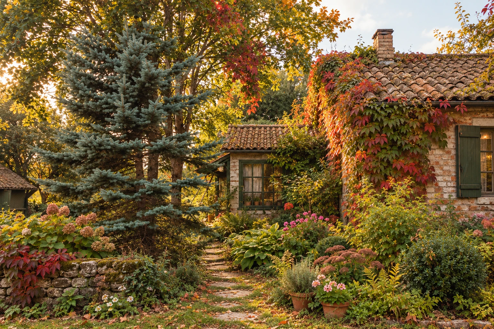
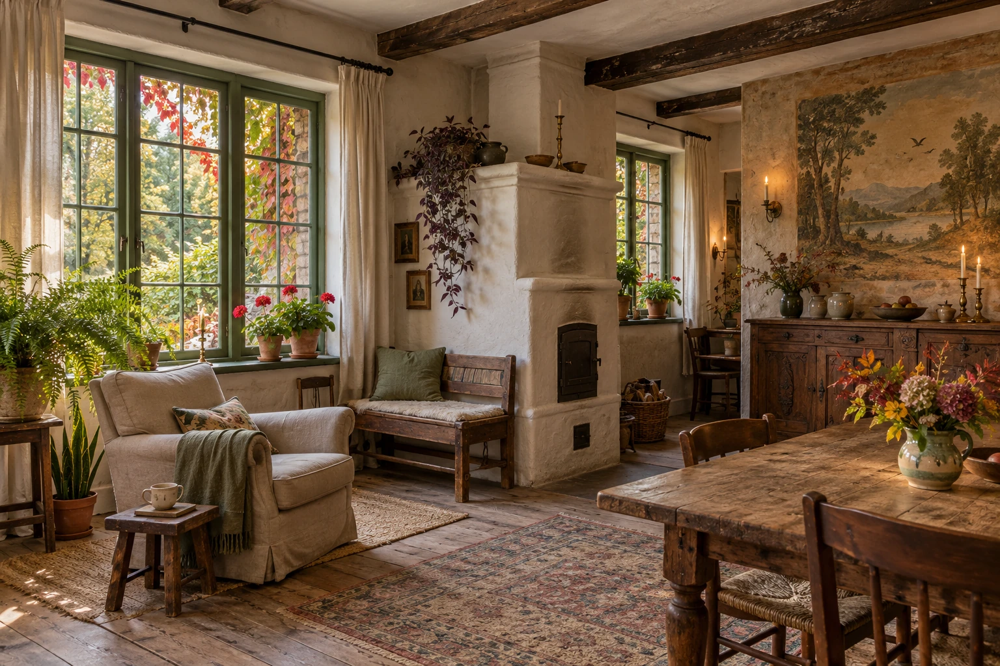
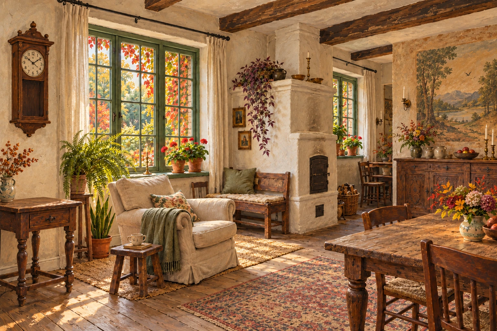
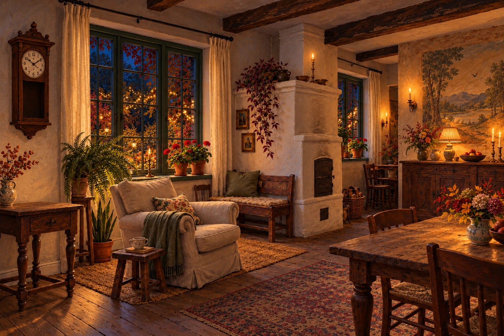

ТИХИЙ ДОМ НА ОПУШКЕ ЛЕСА
Там, где время
становится тише.
Старый сад, тёплая печь и немного сказки.
Приезжайте погостить.
ЗА СТАРОЙ КАЛИТКОЙ
Есть места, где
становится спокойнее.
Дорожка теряется в саду, листья касаются окон, а в доме уже тепло. Здесь можно выспаться, дочитать книгу и провести день так, как давно хотелось.
Своя комната. Общая гостиная. Целый сад для неспешных прогулок.
ПРОГУЛКА ПО САДУ
Сад в разное
время суток.
Выберите рассвет, закат или ночь —
и посмотрите, как меняется сад вокруг дома.
Когда солнце задерживается в листве.

Сад продолжается за окнами. И внутри.ТЕПЛО ОБЫЧНЫХ ВЕЩЕЙ
Устроиться
как дома.
Печь хранит тепло, половицы чуть поскрипывают. На подоконнике цветёт герань, на столе — ветки из сада. Можно сесть с книгой у окна и забыть о времени.
Своя тихая комната
Место, чтобы выспаться, побыть с собой и проснуться без спешки.
Гостиная для встреч
Общий стол, неторопливые завтраки и разговоры возле печи. Здесь приятно собраться вечером.
Ничего обязательного.
Прогулка к реке, чай в саду,
выходные в своём ритме.
ЕЩЁ НЕМНОГО ПОБУДЬТЕ ЗДЕСЬ
Этот дом
любит гостей.
Один поворот времени — и за окнами загорается сад.
А старый телефон приглашает договориться о приезде.


Коснитесь часов — и сменится время суток
ПРИЕЗЖАЙТЕ ПОГОСТИТЬ
Будем ждать вас.
Позвоните, чтобы обсудить даты,
выбрать комнату и узнать дорогу к дому.